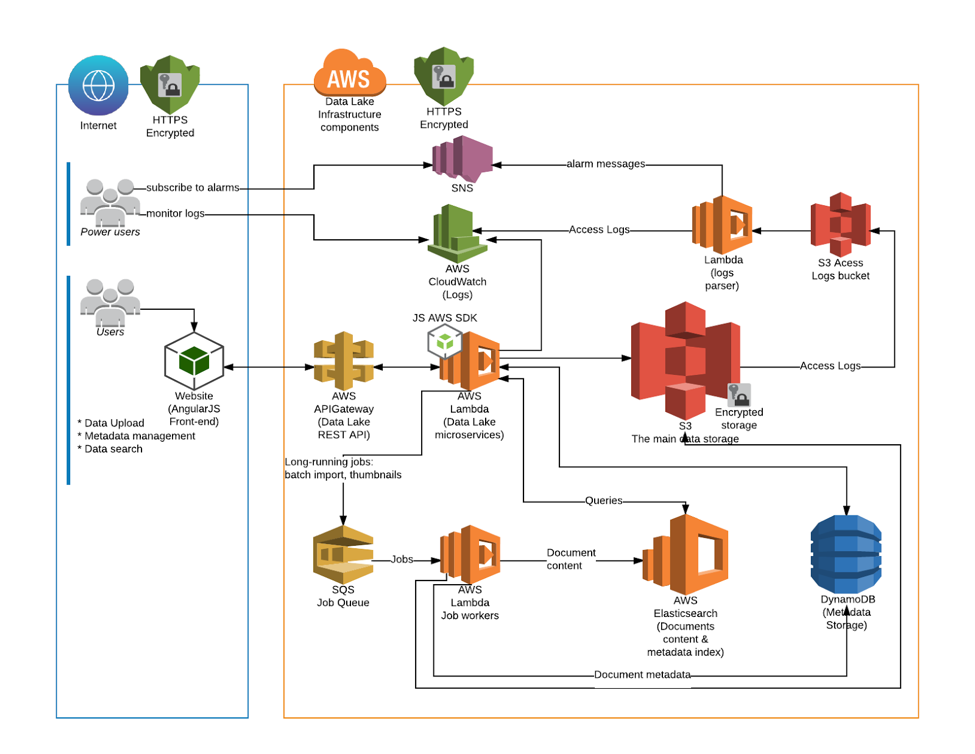

Casestudy1
Casestudy2
Casestudy3
Netflix initially was a DVD-by-mail rental service. However, in 2008, Netflix fell prey to database corruption incident, and their DVD-by-mail service came to a halt for three days straight. This made Netflix management move away from relational database in their data centers to hosting their database on cloud. They retracted from vertical scaling of particular failure points to highly reliable horizontal scaling of distributed systems. They took 7 years for moving completely to AWS and there are several case studies based on Netflix-AWS partnership.
For cloud services they chose Amazon Web Services which offered the Netflix the ability to scale as much as they needed. This eased off work at Netflix where their team had to sit with their IT team to alter scalability based on traffic they were experiencing. Scalability has been one of the major challenge with physical data warehousing. Thanks to elasticity of the cloud of AWS, petabytes of data could be used to stream videos within minutes and thus scaling became seamless.
Netflix did confess that it would have been nearly impossible to scale so much on its own data centers. Netflix shut down its last data center which was used by their streaming service in early January 2016. Yes, it took them 7 years to complete migration but now, there are eight times more users for Netflix as compared to those present in 2008. They have grown tremendously over years. Today, Netflix streams about more than 150,000,000 hours of video content per day. It serves around 86,000,000 members from 190 countries across the world and the numbers as you read are growing. Through Open Connect, video is delivered to users by Netflix. Netflix has its own Content Delivery Network (CDN) which it manages through Amazon. Videos that stream to a user are located in data centers within the networks of Internet service providers, facilities where traffic is exchanged among most of the network operators. The traffic is distributed directly to network operators at such exchange points. When a user presses ‘play’ button, from these sites, videos get delivered to them.
Before a video gets delivered to user, operations such as searching for videos and signing up by the user for the service are all handled in AWS cloud. Hence, the business logic, personalization, search, and data processing which gives the streaming experience are all live in AWS. The technology had to maintain Netflix’s employees who were working in streaming business, and this was also housed in Amazon. The reason it took Netflix took seven years to shift to Amazon was because they rebuilt their entire software platform to leverage AWS cloud network to the maximum. They developed a series of tools to mitigate damage in case of disruption aka ‘Chaos Monkey’. Another curve ball thrown their way was in 2012, Christmas eve, when company was on single Amazon region and they suffered a streaming failure. This made them invest heavily in disaster recovery. Now, Netflix mainly operates in Oregon, Northern Virginia, and Dublin regions. If one of the regions go down, Netflix redirects the traffic to other available regions within a moment’s notice. The company has enough backups of all data which is stored in Amazon itself.
The distributed database, Cassandra is chosen to store customer data where every data element is replicated many times in production. The primary backups of all data are generated into S3 (Simple Storage Service). Any kind of operator errors, logical errors, software bugs, or other such corruptions can be dealt with by the S3 backups. ‘Armageddon Monkey’ is Netflix’s attempt to recover from failures of all its systems on AWS.
One of the Netflix’s blog post has quoted, ‘Supporting such rapid growth would have been extremely difficult out of our own data centers; we simply could not have racked the servers fast enough,’ It continues, ‘Elasticity of the cloud allows us to add thousands of virtual servers and petabytes of storage within minutes, making such an expansion possible.’ So, that is the power of Amazon Web Services propelling one of the most ambitious companies on earth, Netflix, into uncharted territory and runaway success!
References:
https://www.matillion.com/blog/redshift/why-did-netflix-migrate-to-the-aws-cloud/https://intellipaat.com/blog/how-amazon-web-services-is-powering-netflix-case-study/Lucidchart, an online diagramming software, was initially launched on the Amazon EC2 Classic platform in 2008. Matthew Barlocker, Chief Architect at Lucidchart, discusses their migration plan, pain points, and unexpected issues in one of the AWS conferences as Lucid Software had large documents. Their requirements were they needed to collaborate in real-time, track each change made to be able to restore any previous changes if needed, they use high quality images and store them at same resolution as they imported along with vector graphics.
With growing user base, they needed more robust, secure infrastructure. After much debate about other vendors (such as Rackspace, Google App Engine) and colocation, Lucidchart chose Amazon VPC.
With growing user base, they needed more robust, secure infrastructure. After much debate about other vendors (such as Rackspace, Google App Engine) and colocation, Lucidchart chose Amazon VPC.
Their migration plan was to move top layer first, move one layer at a time, meticulously manage security groups, move monitoring/utility servers last.
Few of the pain points were, that they took time to determine VPC configuration they wanted, took time to troubleshoot network ACL and security group issues, however, they have not had to revisit the configuration since they got it working.
References:
https://www.youtube.com/watch?v=jxvVYRFJCuchttps://www.slideshare.net/MatthewBarlocker/barlocker-vpcThe Challenge:
C4ADS’s clients require data-driven analysis based on evidence that concern any global conflict and transnational security issues. With a focus on identifying the drivers and enablers of such conflict, this organization has to be absolutely confident in the analysis and assessments they provide. However, the first review step for analyst requires them to dig deep through sizeable records from various sources and formats to narrow down a list of potential hits.
With scaling up of number of datasets C4ADS ingested, they faced new challenge of specific ability to make use of all the information at its disposal. Their analysts were facing difficulty to glean through all of the incoming information in a quick and expedient way. The company approached ClearScale, an AWS Premier Consulting Partner, to understand if there was a way that they could leverage what they did currently by using AWS to assist in making the data more user-friendly.
A solution was needed by C4ADS that had to be implemented in a short time, have an ability to scale as per the need, and given the nature of information they were reviewing the solution had to be extremely secure. With these three requirements, the consultant reviewed numerous approaches and design which they would then develop and implement on AWS.
Data Storage using Data Lake Approach
One of the major challenge was to have ease of performing searches within a large data repository where aggregate multiple different file formats (such as PDFs, emails, Microsoft Word and Excel files, logs, XML and JSON files) could be stored. To achieve this, their consultant had to implement a Data Lake approach within an AWS Virtual Private Cloud (VPC). As long as data types have a consistent approach to querying and retrieving data, a data lake allows for any number of data types to be stored and referenced which is in complete contrast to traditional data warehouse methodologies that require data to adhere to a specific set of schema.
To conform all different file types, available into a normalized format is a resource-intensive activity. Hence, they implemented a solution that would tag all uploaded file content with consistent metadata tagging which, in turn, would allow for greater visibility and speedier search results. This automated metadata tagging for each file that was uploaded either manually or via bulk upload would mimic the client’s existing folder structure and schema that they had adopted internally. This approach ensured that the new solution would be easily understood by analysts that were already familiar with the current operational processes.

System Architecture Diagram (from here)
References:
https://www.clearscale.com/company/cloud-computing-resources/c4ads-aws-datalake